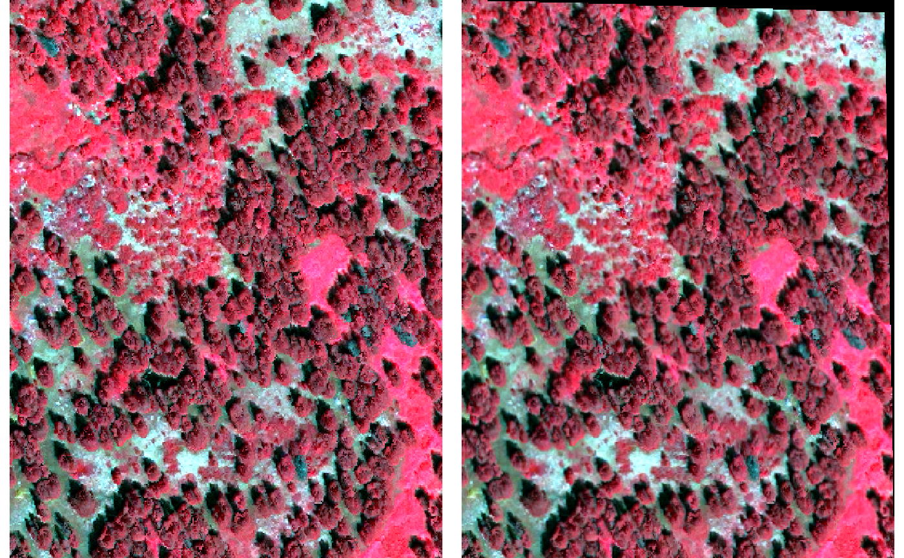

This function provides an interface mirroring that of the GDAL
command-line app gdalwarp. For a description of the
utility and the arguments that it takes, see the documentation at
https://gdal.org/programs/gdalwarp.html.
Usage
gdalwarp(
srcfile,
dstfile,
...,
s_srs,
t_srs,
ct,
to,
vshift,
novshift,
s_coord_epoch,
t_coord_epoch,
order,
tps,
rpc,
geoloc,
et,
refine_gcps,
te,
te_srs,
tr,
tap,
ts,
ovr,
wo,
ot,
wt,
r,
srcnodata,
dstnodata,
srcalpha,
nosrcalpha,
dstalpha,
wm,
multi,
q,
IF,
of,
co,
cutline,
cl,
cwhere,
csql,
cblend,
crop_to_cutline,
overwrite,
nomd,
cvmd,
setci,
oo,
doo,
config_options = character(0),
dryrun = FALSE
)Arguments
- srcfile
Character. Path to a GDAL-supported readable datasource.
- dstfile
Character. Path to a GDAL-supported output file.
- ...
Here, a placeholder argument that forces users to supply exact names of all subsequent formal arguments.
- s_srs, t_srs, ct, to, vshift, novshift
See the GDAL project's gdalwarp documentation for details.
- s_coord_epoch, t_coord_epoch, order, tps, rpc, geoloc, et
See the GDAL project's gdalwarp documentation for details.
- refine_gcps, te, te_srs, tr, tap, ts, ovr, wo, ot, wt, r, srcnodata
See the GDAL project's gdalwarp documentation for details.
- dstnodata, srcalpha, nosrcalpha, dstalpha, wm, multi, q, IF, of, co
See the GDAL project's gdalwarp documentation for details.
- cutline, cl, cwhere, csql, cblend, crop_to_cutline, overwrite
See the GDAL project's gdalwarp documentation for details.
- nomd, cvmd, setci, oo, doo
See the GDAL project's gdalwarp documentation for details.
- config_options
A named character vector with GDAL config options, of the form
c(option1=value1, option2=value2). (See here for a complete list of supported config options.)- dryrun
Logical (default
FALSE). IfTRUE, instead of executing the requested call to GDAL, the function will print the command-line call that would produce the equivalent output.
Examples
# \donttest{
## Prepare file paths
td <- tempdir()
in_tif <- file.path(td, "tahoe.tif")
gcp_tif <- file.path(td, "tahoe_gcp.tif")
out_tif <- file.path(td, "tahoe_warped.tif")
## Set up some ground control points, then warp
file.copy(system.file("extdata/tahoe.tif", package = "gdalUtilities"),
in_tif)
#> [1] TRUE
## Four numbers: column, row, x-coord, y-coord
gcp <- matrix(c(100, 300, -119.93226, 39.28977, ## A
0, 300, -119.93281, 39.28977, ## B
100, 400, -119.93226, 39.28922, ## C
0, 400, -119.93281, 39.28922, ## lower-left
400, 0, -119.93067, 39.29136, ## upper-right
400, 400, -119.93062, 39.28922, ## lower-right
0, 0, -119.93281, 39.29141), ## upper-left
ncol = 4, byrow = TRUE)
## Add ground control points. (For some reason, this drops CRS, so
## it needs to be explicitly given via `a_srs` argument.)
gdal_translate(in_tif, gcp_tif, gcp = gcp, a_srs = "EPSG:4326")
gdalwarp(gcp_tif, out_tif, r = "bilinear")
## Check that it worked
if(require(terra)) {
op <- par(mfcol = c(1, 2))
r1 <- plot(rast(in_tif), main = "Original raster")
r2 <- plot(rast(out_tif), main = "Warped raster")
par(op) ## Reset preexisting parameters
}

# }